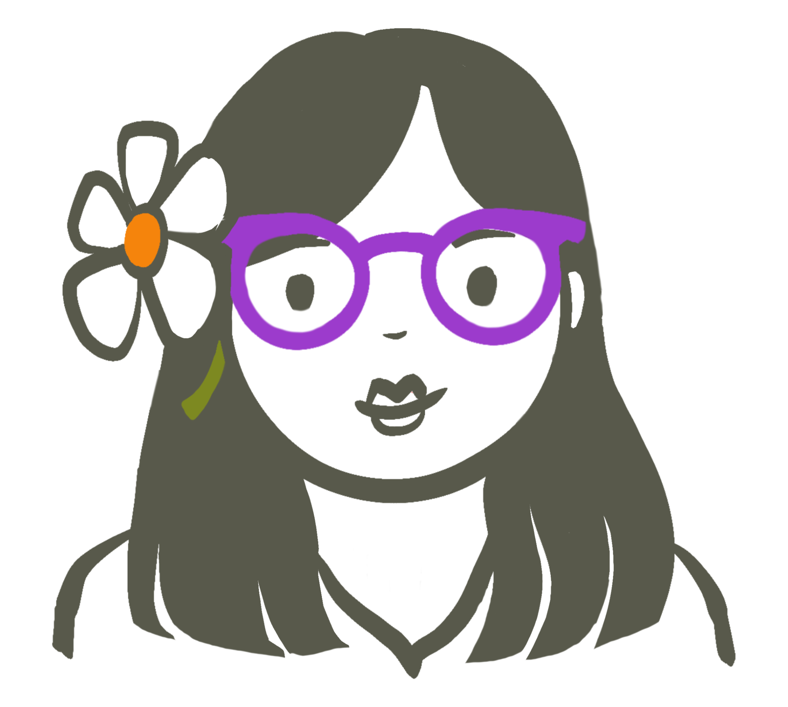

Hi, I'm Alice. I'm interested in how technology (broadly defined) can help us be together in the world. I'm interested in questions like:
- How can large groups of people communicate effectively and make good decisions together?
- What would social media look like if it were designed to produce meaningful, in-person interactions?
I like to make art and drink tea.